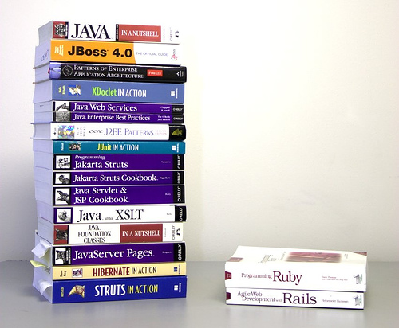
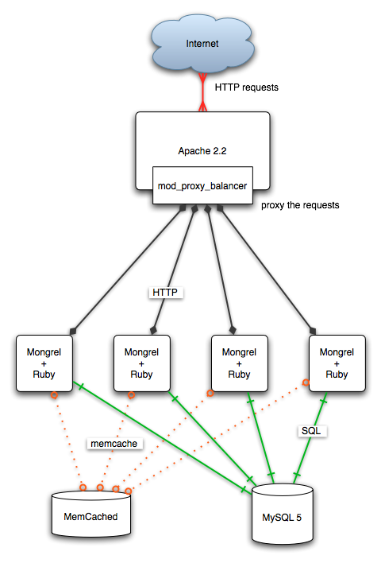

Step 1: Expressiveness (less code)
... promotes …
Step 2: Productivity
... leading to …
Step 3: Business value (profit!)
Side-step the technical problems
... and …
Concentrate on the business problems
“like Smalltalk plus Perl
... but with better syntax”
“quick and clean …
the glue that doesn’t set”
| 1993: | Yukihiro “Matz” Matsumoto creates Ruby |
| ~1995: | first release of Ruby (in Japan) |
| 1998: | Matz’s first official Ruby announcement in English on comp.lang.misc |
| 2001: | “Programming Ruby” (aka “the Pickaxe book”) published |
| inaugural RubyConf | |
| 2003: | Ruby-1.8.0 released |
| 2004: | (April) first release of Rails |
| 2005: | (July) “Agile Web Development with Rails” published |
| (December) Rails-1.0 released | |
| 2006: | (June) inaugural RailsConf |
class Greeting {
public static void main(String args[]) {
System.out.println("Hello, world!");
}
}
puts "Hello, world!"
class Point {
private float x, y;
public Point(float x, float y) { setX(x); setY(y); }
public float getX() { return this.x; }
public void setX(float x) { this.x = x; }
public float getY() { return this.y; }
public void setY(float y) { this.y = y; }
}
Point p = new Point(1,2);
p.setX(10);
class Point
def initialise(x, y); @x=x; @y=y; end
def x(); @x; end
def x=(x); @x = x; end
def y(); @y; end
def y=(y); @y = y; end
end
p = Point.new(1,2)
p.x = 10
class Point {
private float x, y;
public Point(float x, float y) { setX(x); setY(y); }
public float getX() { return this.x; }
public void setX(float x) { this.x = x; }
public float getY() { return this.y; }
public void setY(float y) { this.y = y; }
}
Point p = new Point(1,2);
p.setX(10);
class Point
def initialise(x, y); @x=x; @y=y; end
attr_accessor :x, :y
end
p = Point.new(1,2)
p.x = 10
class Point {
private float x, y;
public Point(float x, float y) { setX(x); setY(y); }
public float getX() { return this.x; }
public void setX(float x) { this.x = x; }
public float getY() { return this.y; }
public void setY(float y) { this.y = y; }
}
Point p = new Point(1,2);
p.setX(10);
Point = Struct.new(:x, :y) p = Point.new(1,2) p.x = 10
Map fifaTitlesByTeam = new HashMap();
fifaTitlesByTeam.put("Brazil", new Integer(5));
fifaTitlesByTeam.put("Italy", new Integer(3));
fifaTitlesByTeam.put("Germany", new Integer(3));
fifaTitlesByTeam.put("Argentina", new Integer(2));
fifaTitlesByTeam.put("Uruguay", new Integer(2));
fifaTitlesByTeam.put("France", new Integer(1));
fifaTitlesByTeam.put("England", new Integer(1));
fifa_titles_by_team = {
"Brazil" => 5,
"Italy" => 3,
"Germany" => 3,
"Argentina" => 2,
"Uruguay" => 2,
"France" => 1,
"England" => 1
}
Collection teams = new ArrayList();
for (Iterator i = fifaTitlesByTeam.keySet().iterator(); i.hasNext();) {
String team = (String) i.next();
int titles = ((Integer) fifaTitlesByTeam.get(team)).intValue();
if (titles > 1) {
teams.add(team);
}
}
System.out.println(StringUtils.join(teams.iterator(), ", "));
teams = []
fifa_titles_by_team.each do |team, titles|
teams << team if (titles > 1)
end
puts teams.join(", ")
iterating
files.each do |f|
message.attach(f)
end
delineating database transactions
db.transaction do |t|
t.execute("update EMPLOYEES set SALARY = 1000000")
end
file processing
File.open(log_file) do |log_file_handle|
log_file_handle.each_line do |line|
cksum << line
end
end

<!DOCTYPE xwork PUBLIC "-//OpenSymphony Group//XWork 1.0//EN"
"http://www.opensymphony.com/xwork/xwork-1.0.dtd">
<xwork>
<include file="action-default.xml"/>
<package name="default" extends="action-default">
<action name="helloWorld" class="eg.HelloWorld">
<result name="success">helloWorld.jsp</result>
</action>
</package>
</xwork>
package eg;
import com.opensymphony.xwork.Action;
import java.util.*;
public class HelloWorld implements Action {
private String greeting;
private String subject;
public void setGreeting() {
this.greeting = greeting;
}
public void setSubject() {
this.subject = subject;
}
public String execute() {
if (greeting == null) {
greeting = "Hello";
}
if (subject == null) {
subject = "world";
}
return SUCCESS;
}
public String getGreeting() {
return this.greeting;
}
public String getSubject() {
return this.subject;
}
}
<%@ taglib prefix="saf" uri="action2" %> <html> <body> <h1><saf:property value="greeting"/>, <saf:property value="subject"/>!</h1> </body> </html>
class HelloController < ApplicationController
def index
@greeting = params['greeting'] || "Hello"
@subject = params['subject'] || "world"
end
end
<html> <body> <h1><%=h @greeting %>, <%=h @subject %>!</h1> </body> </html>
<hibernate-mapping>
<class name="events.Event" table="EVENTS">
<id name="id">
<generator class="native"/>
</id>
<property name="title"/>
<property name="date" type="timestamp"/>
<set name="participants" table="EVENT_PARTICIPANT">
<key column="EVENT_ID"/>
<many-to-many column="PERSON_ID" class="events.Person"/>
</set>
</class>
</hibernate-mapping>
<hibernate-mapping>
<class name="events.Person" table="PERSON">
<id name="id" column="PERSON_ID">
<generator class="native"/>
</id>
<property name="age"/>
<property name="firstname"/>
<property name="lastname"/>
</class>
</hibernate-mapping>
Event and Person classesclass Person < ActiveRecord::Base end
class Event < ActiveRecord::Base
has_and_belongs_to_many :participants,
:class_name => "Person"
end
create_table :events do |table| table.column :title, :string table.column :date, :date end create_table :people do |table| table.column :first_name, :string table.column :last_name, :string table.column :age, :integer end create_table :events_people, :id => false do |table| table.column :event_id, :integer table.column :person_id, :integer end

Large global organisation seeks Senior Developer/Architect.
2-3 years Ruby/Rails experience required.
http://www.ruby-lang.org
http://www.rubyonrails.org
(recently-formed)
Melbourne Ruby users group
THE END